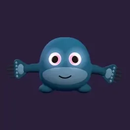
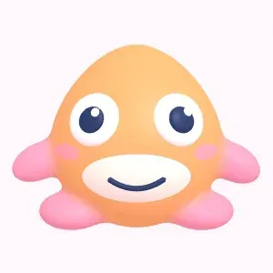
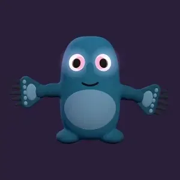
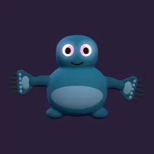
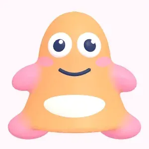
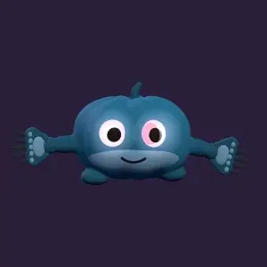
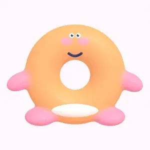
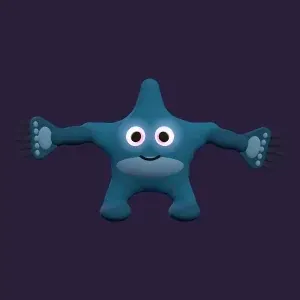
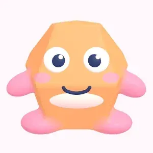
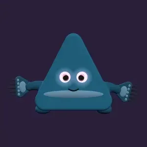

Lo básico
Un Ovaling nace de un huevo. Su ID decide cómo nace: aspecto, estadísticas y ranuras libres. Las estadísticas obtenidas y el Gene Score nunca cambian.

Rareza
Cada Ovaling tiene una de 4 rarezas. Cuanto más alta, mejores suelen ser sus estadísticas, más ranuras están libres y más a menudo aparecen partes raras.
-
Normal
- Bonus de familia
- 1 % a 5 %
- Ranura 2 libre
- 10 %
- Ranura 3 libre
- 0,1 %
- Ranura pasiva libre
- 5 %
- Alas
- 25 %
-
Raro
- Bonus de familia
- 6 % a 10 %
- Ranura 2 libre
- 30 %
- Ranura 3 libre
- 1,5 %
- Ranura pasiva libre
- 15 %
- Alas
- 40 %
-
Épico
- Bonus de familia
- 11 % a 15 %
- Ranura 2 libre
- 50 %
- Ranura 3 libre
- 7,5 %
- Ranura pasiva libre
- 35 %
- Alas
- 60 %
-
Legendario
- Bonus de familia
- 16 % a 20 %
- Ranura 2 libre
- 70 %
- Ranura 3 libre
- 21 %
- Ranura pasiva libre
- 50 %
- Alas
- 80 %
Familias
Hay 2 familias en el juego. El huevo decide cuál es más probable.
-
Luz
Redondos y tiernos, con colores claros. Los Ovalings de Luz tienen más Vida.
-

SombraFantasía oscura con brillo violeta. Los Ovalings de Sombra tienen más Ataque.
Aspecto
Un Ovaling se arma con partes. Cada parte tiene muchas formas base, y los reguladores del ID cambian largo, grosor y ángulo.









- Cuerpo42 formas
- Ojos32 formas
- Boca26 formas
- Cuernos12 formas o ninguna
- Brazos24 formas
- Piernas24 formas
- Cola10 formas o ninguna
- Patrón10 formas o ninguna
- Orejas10 formas o ninguna
- Espalda24 formas o ninguna
Además
- 1 a 5 ojos en distintas posiciones
- 19 tipos de cejas
- 23 manos y 20 pies
- 24 formas de alas, a veces dos pares
- 40 materiales de piel por familia
- 6 colores raros como albino o neón
Piel en 4 niveles
La mayoría de los Ovalings tiene un color normal. Los más raros tienen un color raro o un material, los más raros de todos un material en movimiento.
- Color75 %
- Color raro15 %
- Material8 %
- Material en movimiento2 %
Estadísticas
6 estadísticas, cada una en un rango fijo. La rareza cambia dónde suele caer el valor.
- Vida100 a 10.000
- Ataque50 a 1.500
- Defensa25 a 1.000
- Velocidad10 a 150
- Prob. crítica1 % a 80 %
- Daño crítico120 % a 250 %
Gene Score
La posición media de las 6 estadísticas dentro de su rango, de 0 a 100. Nunca cambia.
Suerte
A veces un valor sale de una tirada de suerte sobre todo el rango. La app lo marca con una estrella.
Nivel
Los Ovalings suben hasta el nivel 50. Cada nivel suma 2 % de Vida, Ataque y Defensa y 1 % de Velocidad. La experiencia llega con los combates y las pociones de XP. El Gene Score no cambia.
Ranuras de ataque
La ranura 1 siempre lleva el ataque básico de la familia. Si la ranura 2, la ranura 3 y la ranura pasiva están libres se decide al nacer.


- Las ranuras bloqueadas se pueden desbloquear: la ranura 2 por 300 diamantes, la ranura 3 por 800 y la ranura pasiva por 600.
- Los ataques y las pasivas se pueden quitar. La primera vez en cada ranura es gratis, después cuesta 150 diamantes por un ataque y 250 por una pasiva.